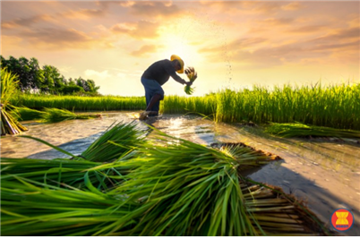
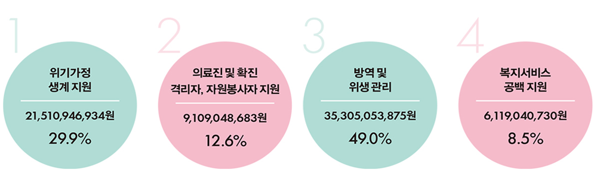
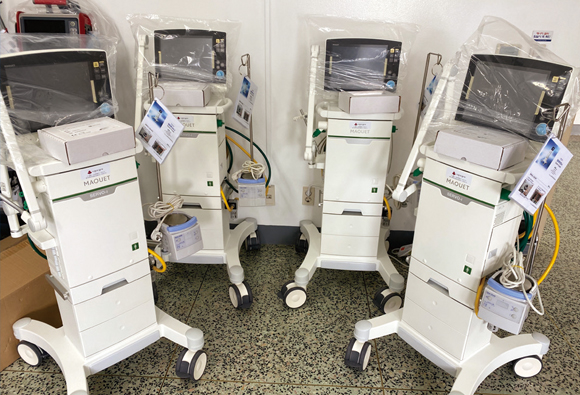
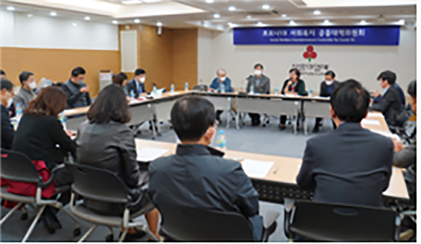

CCK: Special Allocation for COVID-19 Response
1. CCK: Joining UWW Food Security Initiative for 3 Southeast Asian
Countries Affected by the Pandemic
2. CCK: COVID-19 Special Allocations
2. CCK: COVID-19 Special Allocations
1. CCK: Joining UWW Food Security Initiative for 3 Southeast Asian
Countries affected by the Pandemic
In partnership with United Way Worldwide, CCK is supporting Southeast
Asian communities to address COVID-19 triggered food security issue.
This project will benefit communities in Indonesia, Vietnam, and Myanmar
with home delivered meals and address food security caused by the
COVID-19 pandemic.
CCK realizes these countries are experiencing an unparalleled impact
from the virus due to the lack of public and private medical services
and welfare infrastructure. CCK saw the needs and agreed to donate USD
100,000 through United Way Worldwide and give top priority to prevent
hunger among children and women in low-income areas of the three
countries.

The ASEAN declared on April 17, 2020 (through an agreement
signed by ministers from 10 countries) that it will focus its resources
on addressing food insecurity in the ASEAN community resulting from
the spread of COVID-19.
UWW Asia team will monitor and report on the implementation of the
project in each country. The funds provided by CCK will be solely used
for purchasing groceries and daily necessities, as well as medical
education kits related to hygiene and COVID-19.
☞ CCK and UWW have been running the Asia Pacific Learning Center since
2010 to share Korea’s experiences in developing “a culture of sharing”
and growth strategies. In addition, they work together to help other
countries to establish fundraising systems and create a self-sustaining
regional ecosystem of sharing.
Project Overview
○ Name :The COVID-19 Food Security Initiative helping communities in Southeast Asia- Indonesia, Myanmar & Vietnam
○ Period: Jun. 1 - Dec. 31, 2020
○ Project Details
1. Families of vulnerable population in three Southeast Asian countries (Indonesia, Myanmar & Vietnam) unable to secure food and hygiene products during the COVID-19 outbreak
2. Target: 5,000 households whose livelihoods are threatened by COVID-19
3. Details
- Grocery and daily necessity kit for each household
- Education Campaign about COVID-19 through mass media and social media
4. Participating Institutions
- ASEAN Foundation (established by ASEAN’s ten member states)
- Indonesia’s Food for Indonesia (Peduli Panga)
- Vietnam’s MSD (Management and Sustainable Development Institute)
CCK: COVID-19 Special Allocations
“Prioritizing Urgent Areas, Covering All Areas in Need in a Prompt Manner”
Starting with COVID-19 emergency support projects in 54 locations in February ( KRW 1 billion or approx. USD 827,130), CCK has so far funded 3,609 projects through 760 allocation partners across Korea (KRW 101.32 billion or approx. USD 83.9 million). Projects completed or still ongoing account for 94% of total fundraised (as of May 20). CCK adheres to the following principles to ensure prompt and effective allocation of the donations raised nationwide.
COVID-19 Special Allocation Projects in Four Areas
| Area | Description |
|---|---|
| 1) Livelihood support for families in crisis | Living expenses for families in crisis, covering daily necessities, groceries, and ready-to-cook meals |
| 2) Support for medical staff, patients, quarantined individuals, and volunteers | Provide supplies such as protective gear, underwear, meals/snacks, daily supplies for those hospitalized or quarantined suddenly |
| 3) Disinfection and sanitation control | Health supplies and personal hygiene items, disinfection of spaces where COVID-19 patients were visited or lived in |
| 4) Support in welfare service gaps | Substitute healthcare personnel, activities to replace reduced social activities, psychological and emotional support, support for temporary dwelling, and etc. |
| Lee Tae-su, Chairman of the CCK Headquarter Fund Allocation Subcommittee | |
|---|---|
|
“Focusing on providing prompt and effective assistance in the face of national crisis” COVID-19 was the first social crisis that affected the entire nation, and I felt I had an extra responsibility when discussing the allocation plan. We created a special task forces to ensure the rapid response and we communicated with those in the field to establish allocation criteria and areas for assistance. We wanted to make sure the funds are allocated to the areas most needed. As we have a strong network with social welfare organizations from various projects in the past, we were able to address a diverse range of social needs, including housing, the environment, medical services and employment. Now is the time to look at the bigger picture and establish a new support system aims at creating “a safer society” considering the changes in our post-coronavirus society. We will continue to listen to the people working on the frontline, act swiftly, be different from the government, and value cooperation. |
|
One. Prioritizing Urgent Areas
Since the beginning of COVID-19 pandemic, CCK has
been actively communicating with social welfare
institutions, associations and facilities and held
meetings with them to understand the difficulties
they face and identify welfare “blind spots.” The
Fund Allocation Subcommittees of CCK headquarters
and 17 local branches gathered together to set the
criteria and priorities for support. There are four
areas identified as priorities: 1. Livelihood
support for families in crisis, 2. Support for
medical staff, patients, quarantined individuals,
and volunteers, 3. Disinfection and sanitation
control, and 4. Support in welfare service gaps.

| 1. Livelihood support for families in crisis | 2. Support for medical staff, patients, quarantined people, and volunteers | 3. Disinfection and sanitation control | 4. Support in welfare service gaps. |
|---|---|---|---|
| 30.2% | 12.2% | 49.6% | 8% |
Two. Covering All Areas in Need
COVID-19 has caused a social crisis with serious
repercussions for the entire nation.
To address this national and all-encompassing crisis,
CCK has provided a flexible and multi-faceted support.
For instance, CCK expanded its scope of project areas,
which used to focus on social welfare services only, to
providing medical equipment and supplies to support
patients’ treatments and healthcare providers, and
providing disinfection equipment for local communities.
Limits on funds provide for individuals have also
increased.

Respirators provided to Dongsan Hospital in Daegu
Three. In a Prompt Manner
Knowing the need for urgent and immediate response to this infectious disease, CCK sought to allocate funding to projects promptly. Based on the cooperative system with our allocation partners, who have expertise in providing assistance simultaneously across the country, efforts were made to resolve hardships in the field as quickly as possible by simplifying application procedures and required documentation and deliberating through an online system in real time.

Meeting with welfare-related organizations in relation to COVID-19 response

international@chest.or.kr
Community Chest of Korea, All Rights Reserved
Community Chest of Korea, All Rights Reserved